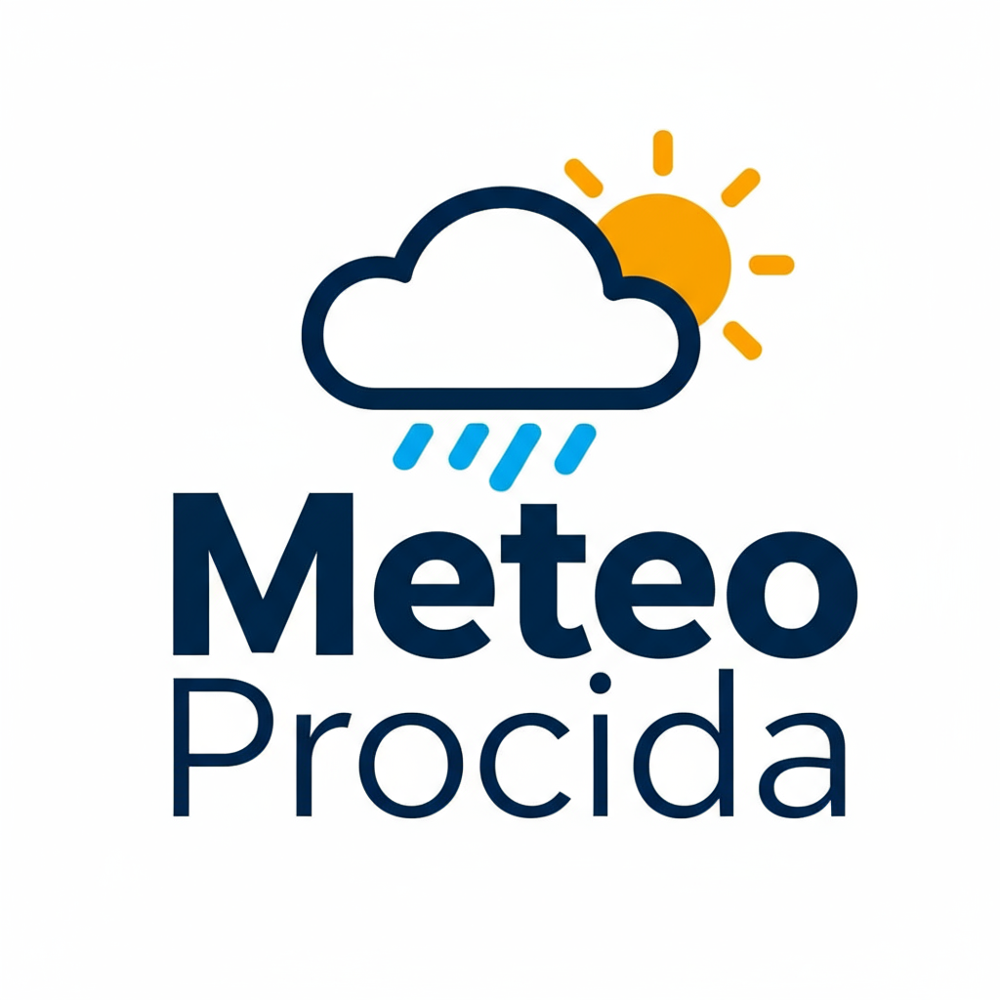

üîî

Meteo Procida
Previsioni 7 giorni - Analisi AI
üì§ Condividi
üì• PDF
Temperature & Precipitazioni - 7 Giorni
Pressione Atmosferica & Vento
Condizioni Meteomarine - 7 Giorni
üìÖ Prossimi 6 giorni